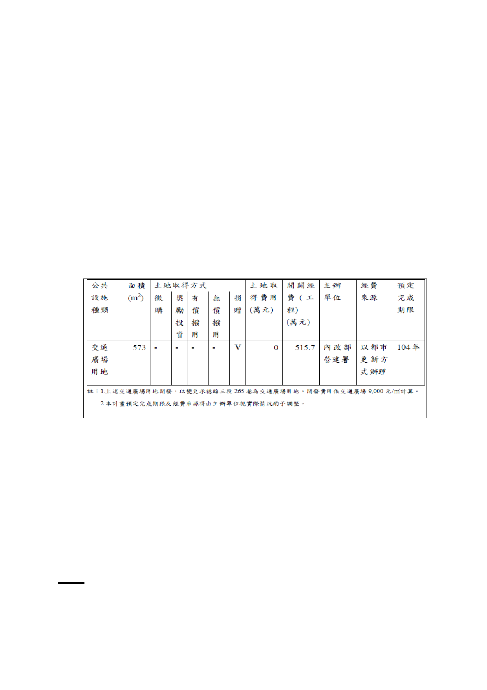

3. 本案以道路用地等面積調整交通廣場用地，惟考量後續如因
測量分割致交通廣場用地無法滿足前開等面積時，仍應以原
總法定容積不變辦理，以維權益。
（三）擬定都市設計準則，加強實施建築管理。
（四）事業及財務計畫：
1. 開發方式：本計畫範圍依都市更新條例辦理。本計畫變更之
交通廣場用地未來由實施者協助開闢，並列入共同負擔項
目。
2. 本計畫內交通廣場用地及道路用地等公共設施均採都市更
新權利變換方式開闢，未來由都市更新實施者依核定之都市
更新事業計畫及權利變換計畫辦理。另本次都市計畫變更之
「交通廣場用地」取得方式及費用與經費來源如下表。
七、本案係市府 103 年 8 月 26 日府都規字第 10334256703 號函送
到會，並於 103 年 8 月 27 日起公開展覽 30 天。
八、公民或團體所提意見：無。
九、申請單位：內政部營建署。
十、辦理單位：臺北市政府。
十一、法令依據：都市計畫法第 27 條第 1 項第 4 款。
決議：
本案除下列修正內容，其餘依公展計畫書圖內容，修正後通過。
一、 基地南側臨庫倫街側，請予以留設遮蔽風雨空間並納入於都
- 169 -